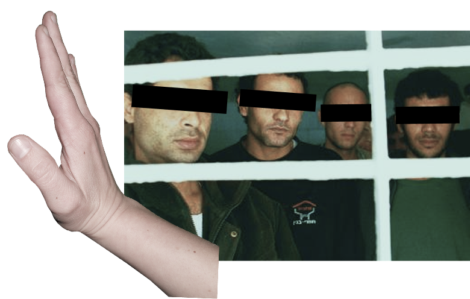

Zahtevaj odziv Slovenije na smrtno kazen za Palestince!

Konec marca je apartheidski Izrael sprejel nov zakon, ki predpisuje smrtno kazen izključno za Palestinke in Palestince, "obsojene" zaradi smrtonosnega "terorizma".
Smrtna kazen je nemoralna in gnusna oblika kaznovanja, ki pa v kontekstu izraelskega genocida, etničnega čiščenja, apartheida, nezakonite okupacije in naseljenskega kolonializma Palestine dobiva še dodatno groteskno razsežnost.
Palestinke in Palestinci že zdaj nimajo nikakršnega dostopa do poštenega sojenja ali pravice na izraelskih vojaških sodiščih, ki se ponašajo s 96 % stopnjo obsodb. Najnovejše poročilo posebne poročevalke ZN za Palestino Francesce Albanese jasno navaja, da je izraelska sistematična uporaba mučenja in namerno zanemarjanje zapornikov del potekajočega genocida. Rasistični in morilski zakon o smrtni kazni je le še eno orožje, ki ga Izrael uporablja v svojem brutalnem sistemu apartheida nad Palestinkami in Palestinci.
Prosimo, da si vzamete 2 minuti časa in še danes pošljete e-pošto predsedniku Vlade RS in ministrici za zunanje in evropske zadeve ter zahtevate konkretne ukrepe, ne le neskončnih obžalovanj izraelske brutalnosti.
Vlada RS sicer trenutno opravlja le tekoče posle, a sta preprečitev izvajanja morilskega in rasističnega zakona ter zaustavitev genocida njene odgovornosti ne glede na to, na kakšen način opravlja svoje delo.
Spoštovani predsednik vlade dr. Robert Golob,
Spoštovana ministrica za zunanje in evropske zadeve gospa Tanja Fajon,
pišem vam z ogorčenjem zaradi grozljivega zakona, ki ga je kneset sprejel 30. marca 2026 in uvaja smrtno kazen z obešanjem izključno za Palestinke in Palestince. Zakon je brutalen, očitno rasističen, jasen primer apartheida in še ena groba kršitev mednarodnega prava.
Zavedam se, da Vlada RS trenutno opravlja le tekoče posle, a sta preprečitev izvajanja morilskega in rasističnega zakona ter zaustavitev genocida njene odgovornosti ne glede na to, na kakšen način opravlja svoje delo.
Smrtna kazen je nemoralna in gnusna oblika kaznovanja, v kontekstu izraelske okupacije palestinskega ozemlja, ki je bila v prelomni sodbi Meddržavnega sodišča julija 2024 potrjena kot nezakonita, pa ima še dodatno razsežnost. Izraelsko okupacijo namreč podpira sistem vojaških sodišč, ki veljajo le za Palestinke in Palestince na Zahodnem bregu, medtem ko za Izraelke in Izraelce, ki tam živijo v nezakonitih naselbinah, velja izraelsko civilno pravo. Ta vojaška sodišča se ponašajo s 96 % stopnjo obsodb, ker Palestinske in Palestinci nimajo dostopa do poštenega sojenja, na kar že desetletja opozarjajo mednarodni strokovnjaki za človekove pravice.
Uvedba smrtne kazni v okolju, kjer temeljna pravica do poštenega sojenja ni zagotovljena, je pravna in moralna katastrofa. Poleg tega novi zakon dopušča kaznovanje s smrtno kaznijo tudi za palestinske državljane Izraela, s čimer razkriva temeljito rasistično logiko in delovanje izraelskega sistema apartheida proti vsem Palestinkam in Palestincem.
Zavedam se, da je slovenska vlada podala izjavo, v kateri je izrazila zaskrbljenost zaradi sprejetja omenjenega zakona. A izjave niso dovolj. Skrajni čas je, da slovenska vlada uvede obsežne in celovite sankcije proti Izraelu brez izjem, in sicer:
- vojaški embargo na uvoz, izvoz ter tranzit orožja, vojaške
tehnologije in izdelkov za dvojno rabo v Izrael in iz njega
brez odstopanj, kot so nakupi izraelskih protiraketnih
sistemov SPIKE in kibernetske tehnologije;
- prepoved uvoza in izvoza izdelkov iz nezakonitih izraelskih
naselbin, kot je to storila Španija in kot je to sporočila
Vlada RS avgusta 2025, a uredbe o prepovedi ni nikoli
sprejela;
- umik veleposlanika Slovenije iz Izraela, kot je to naredila
Španija.
Pozivamo vas tudi, da neovirano omogočite evakuacijo palestinskih študentov in študentk, ki so vpisani na slovenske univerze, ali sorodnikov Palestincev in Palestink, ki živijo v Sloveniji – kot je to med drugim naredila (skrajno desna) italijanska vlada – ter se odzovete na kazensko ovadbo, ki so jo vložile številne nevladne organizacije, in s tem omogočite kazenski pregon izraelskega političnega vrha na podlagi univerzalne jurisdikcije.
Na ravni EU je nujno potreben takojšen ponovni zagon postopka prekinitve vsega trgovanja z nezakonitimi izraelskimi naselbinami, Evropski svet pa mora sprejeti ukrepe za začasno prekinitev pridružitvenega sporazuma med EU in Izraelom.
Zdaj je čas, da Slovenija končno izpolni svoje pravne obveznosti in preneha podpirati nezakonite dejavnost Izraela z ohranjanjem trgovinskih in diplomatskih odnosov ter vojaškega sodelovanja. Da bi to storila, mora uvesti smiselne in obsežne sankcije proti Izraelu.